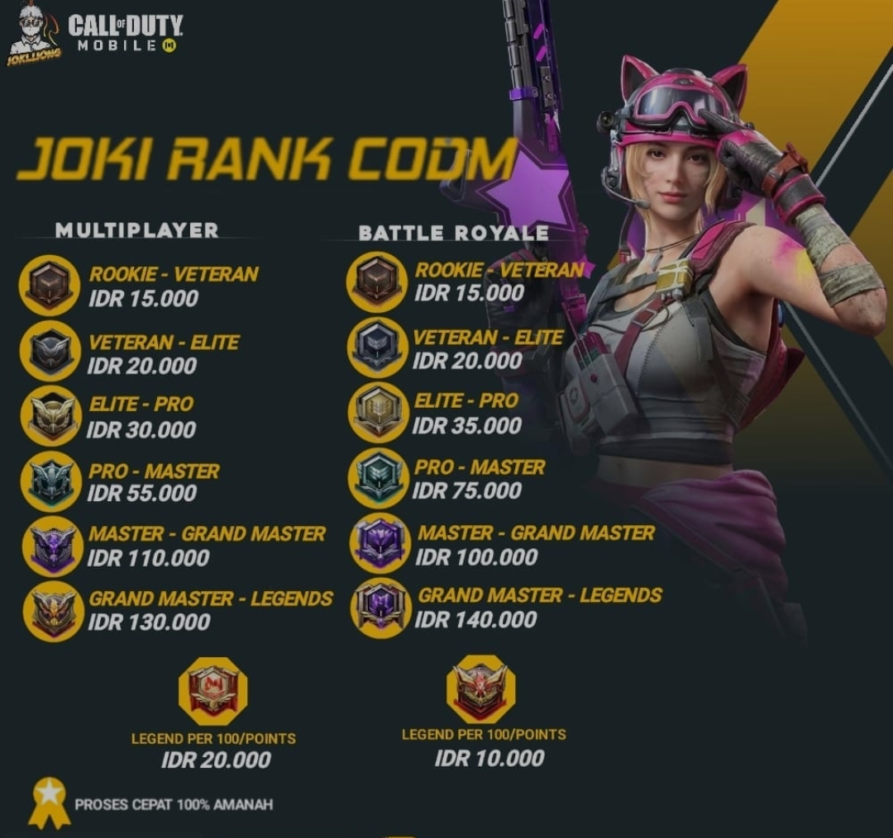
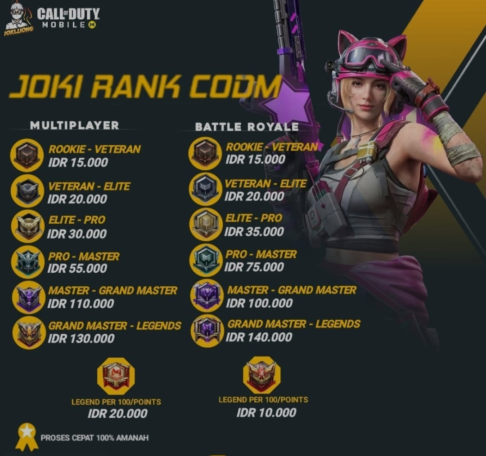

Apa itu Call of Duty Mobile?

Call of Duty: Mobile adalah sebuah game free-to-play yang dikembangkan oleh TiMi Studios dan
dipublikasikan untuk perangkat Android dan iOS. Game ini secara resmi dirilis pada 1 Oktober
2019 dan telah diumumkan sebelumnya pada Maret 2019, sembari dilakukannya serangkaian beta test
secara tertutup di India, Australia dan Kanada. Game ini memperoleh lebih dari 35 juta unduhan
dalam 3 hari setelah perilisannya, dan berhasil meraup pendapatan lebih dari 2 juta dolar Amerika.
Bahkan setelah 1 minggu game ini dirilis, COD Mobile memberikan kejutan dengan berhasil meraih 100
juta unduhan dan memperoleh pendapatan lebih dari 18 juta dolar.
Pencapaian ini membuat COD Mobile sebagai game mobile dengan peluncuran terbesar sepanjang sejarah. Secara umum, game ini cukup kaya dengan menghadirkan semua mode varian Player vs. Player (PVP), termasuk Battle Royale. Di sisi lain, tim pengembang juga sempat mengungkapkan bahwa COD Mobile tidak akan menjadi game yang sepenuhnya bersifat multiplayer. Ke depannya, akan ada beberapa mode kejutan yang ditambahkan. Di dalam permainan ini baik peta, karakter, dan senjata yang muncul merupakan gabungan dari semua seri Call of Duty dalam beberapa tahun terakhir, termasuk di dalamnya seri Modern Warfare dan Black Ops.
Pencapaian ini membuat COD Mobile sebagai game mobile dengan peluncuran terbesar sepanjang sejarah. Secara umum, game ini cukup kaya dengan menghadirkan semua mode varian Player vs. Player (PVP), termasuk Battle Royale. Di sisi lain, tim pengembang juga sempat mengungkapkan bahwa COD Mobile tidak akan menjadi game yang sepenuhnya bersifat multiplayer. Ke depannya, akan ada beberapa mode kejutan yang ditambahkan. Di dalam permainan ini baik peta, karakter, dan senjata yang muncul merupakan gabungan dari semua seri Call of Duty dalam beberapa tahun terakhir, termasuk di dalamnya seri Modern Warfare dan Black Ops.
Pricelist

